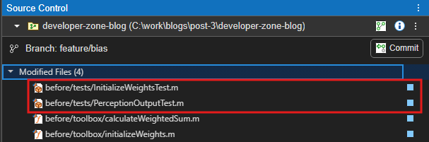

In Part 1, we looked at how the Find Tests button in the MATLAB Toolstrip can streamline your workflow by surfacing the relevant tests for the MATLAB file you are currently editing. While that approach works great for making changes to a single file, as development progresses and you prepare to commit a batch of changes, your focus shifts from a single file towards ensuring the integrity of those whole commits. And, a quick feedback loop is key to enabling frequent and high-quality commits before pushing to your remote branch.
Starting in R2025a, the MATLAB Test Manager app helps you do just that. It lets you manage a test suite that automatically detects which tests are impacted by changes since your last source control commit. This means you can avoid running the full (potentially time-consuming) test suite, while still catching any regressions early.
Let's look at how that works in practice.
We'll take the same example from Part 1: A Simple AND Perceptron

Before we dive into the example, let me take a quick moment to highlight something that is also new in MATLAB R2025a - the Source Control side panel.
This new panel, easily accessible off the sidebar, automatically detects source control folders you are actively working on. That means you can quickly get oriented without needing to dig through menus. As you make changes, it gives your a clear view of modified and untracked files, and let's you make source control actions right from the panel. You can also jump into the Branch Manager from there to manage your branches with ease. Wanna know more? Check out Source Control Integration in MATLAB documentation.
Note: Source Control integration in MATLAB supports both Git and SVN systems, but for the purposes of this post, I'll be using Git.
Alright, back to our example...
Contents
Goal: Enhancing the Perceptron to Use Bias as a Parameter
Tip: You can access the supporting files for this post in the developer-zone-blog GitHub repository. The before folder contains the original code to reproduce the steps outlined in this blog, while the after folder includes the final version of the code.
In the previous post, we explored how the perceptron model classifies data by calculating a weighted sum of inputs and applying a threshold function. This approach utilizes a fixed bias term to adjust the decision boundary.
In that implementation, the bias term is set to a constant value of 1, as shown below:
function output = calculateWeightedSum(weights, inputs) % Compute the weighted sum total_input = sum(weights .* [inputs, 1]); % Activation logic if total_input > 0 % step function threshold; activate if weighted sum is positive output = 1; else output = 0; end end
This fixed bias term simplifies the model but limits its adaptability.
Solution: Trainable Bias Term
To improve the model's flexibility and potentially enhance its performance, we propose modifying the bias term to be trainable. This adjustment allows the bias to be learned alongside the weights during training, enabling the model to better fit the data. The updated code should represent the following equation:
where b is now a learnable bias parameter.
Let's explore how the MATLAB Test Manager can facilitate efficient implementation of this change through impact-based testing.
Utilizing MATLAB Test Manager to find and run impacted tests
We'll begin by examining what tests the test manager identifies before make we make any changes. When you select All Tests in Current Project , it finds, well, all the tests in your MATLAB Project.

In R2025a, the app introduced a new option named Impacted Tests Since Last Commit. Initially, with no changes made, selecting Impacted Tests Since Last Commit reveals no affected tests, confirming that our codebase is unchanged.
The Source Control panel agrees!
So, let's get to work and start making the changes. We begin by creating a new branch feature/bias using Source Control > Branch Manager
Looks like we are in a good source control state here – right branch for the change.
To turn bias into a model parameter, we need to modify the functions that initialize the weights and calculate the weighted sum.
initializeWeights.m
Before:
function weights = initializeWeights() % Initialize weights randomly for two inputs and one bias weights = rand(1, 3) * 0.5; end
After:
function [weights, bias] = initializeWeights(numInputs) % Initialize weights and bias randomly weights = rand(1, numInputs); % Random weights for each input bias = rand() - 0.5; % Bias initialized to a small random value between -0.5 and 0.5 end
calculateWeightedSum.m
Before:
function output = calculateWeightedSum(weights, inputs) % Compute the weighted sum total_input = sum(weights .* [inputs, 1]); % Activation logic if total_input > 0 % step function threshold; activate if weighted sum is positive output = 1; else output = 0; end end
After:
function output = calculateWeightedSum(weights, bias, inputs) % Compute the weighted sum total_input = sum(weights .* inputs) + bias; % Activation logic if total_input > 0 % step function threshold; activate if weighted sum is positive output = 1; else output = 0; end end
OK, we made the desired changes. With those changes implemented, we'll now rely on MATLAB Test Manager to identify and run only the tests impacted by our modifications. This targeted testing approach helps maintain efficiency and ensures that we address any regressions introduced by the changes.
Let's select Impacted Tests Since Last Commit in the test manager to identify the relevant tests.
The Test Manager detected 4 impacted tests. Let's run them…
Uh-oh! All tests have failed.
Thankfully, failure diagnostics are provided alongside the results, offering helpful insights for troubleshooting.
Ah, right! We modified the function signatures of initializeWeights.m and calculateWeightedSum.m. Let's address this.
The first two failures are straightforward – they simply require us to update the tests corresponding to those two modified functions.

We re-run the tests in the MATLAB Test Manager.
Progress! The first two tests now pass. However, we still have two failures remaining.
Upon closer inspection, it seems the remaining issues are related to other source files, such as trainPerceptron.m and predict.m. These need to be updated to account for the new trainable bias parameter and ensure it is trained alongside the weights.
OK, we have updated those functions and their corresponding tests as well to address the regression and ensure we have a cohesive set of changes. We'll click Refresh tests in the test manager to get an updated list of impacted tests.
Good news - there are no additional impacted tests. The tests identified earlier are already covering the newly updated source files.
Great! All tests are passing now, giving us confidence that the changes are compatible with the rest of the codebase.
Ideally, we would add new tests to specifically target the new functionality. Even better, we could start with those new tests to drive our implementation. Depending on the complexity of the application we might also consider performing ad-hoc testing to further bolster the rigor of our qualification and ensure full confidence in the changes.
The test manager supports you throughout this process by automatically identifying and running only the tests impacted by the changes in each development iteration. Much like the Find Tests feature we discussed in Part 1, Impacted Tests Since Last Commit also leverages dependency analysis to find impacted tests.
An additional feature I find particularly useful in the test manager is its ability to track the history of test runs. This allows you to review previous test results, providing valuable insights as you iterate through your development process.
Once we've validated our changes, we can commit them using the Source Control panel:

We now have a new commit
After committing, the test manager indicates that no tests have been impacted since the last commit. That makes sense!
If further development is needed for the feature, we continue to implement changes in manageable increments and commit frequently. This approach ensures the integrity of each commit while leveraging the test impact analysis capability for efficient qualification.
Would you consider adopting this capability in your workflow? Are there any aspects of test impact analysis or the workflow itself that we could improve to facilitate a more seamless development cycle for you? We welcome your thoughts in the comments below!
What's Next...
So far, we have conducted cycles of interactive testing using the Find Tests button and MATLAB Test Manager capabilities. Our next step will be to explore how the MATLAB build tool can help automate and further enhance your development workflow. We'll specifically examine how it can leverage the same foundational test impact analysis capability to enable incremental testing and faster local automated builds as part of our pre-qualification process.